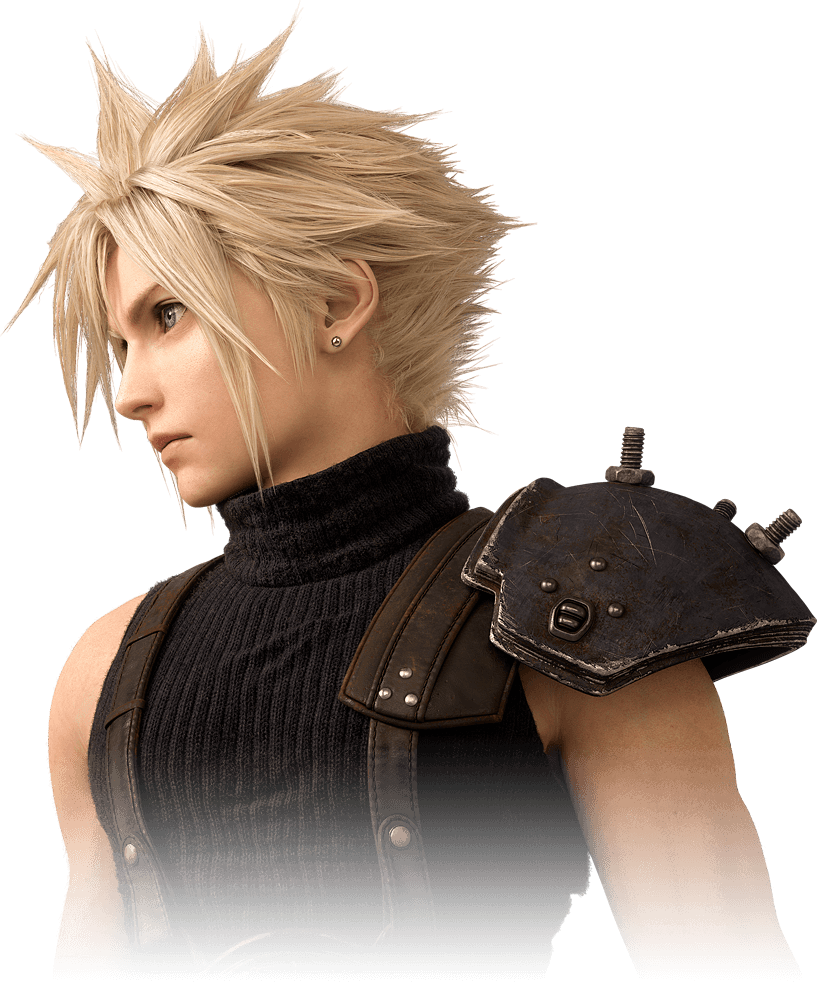
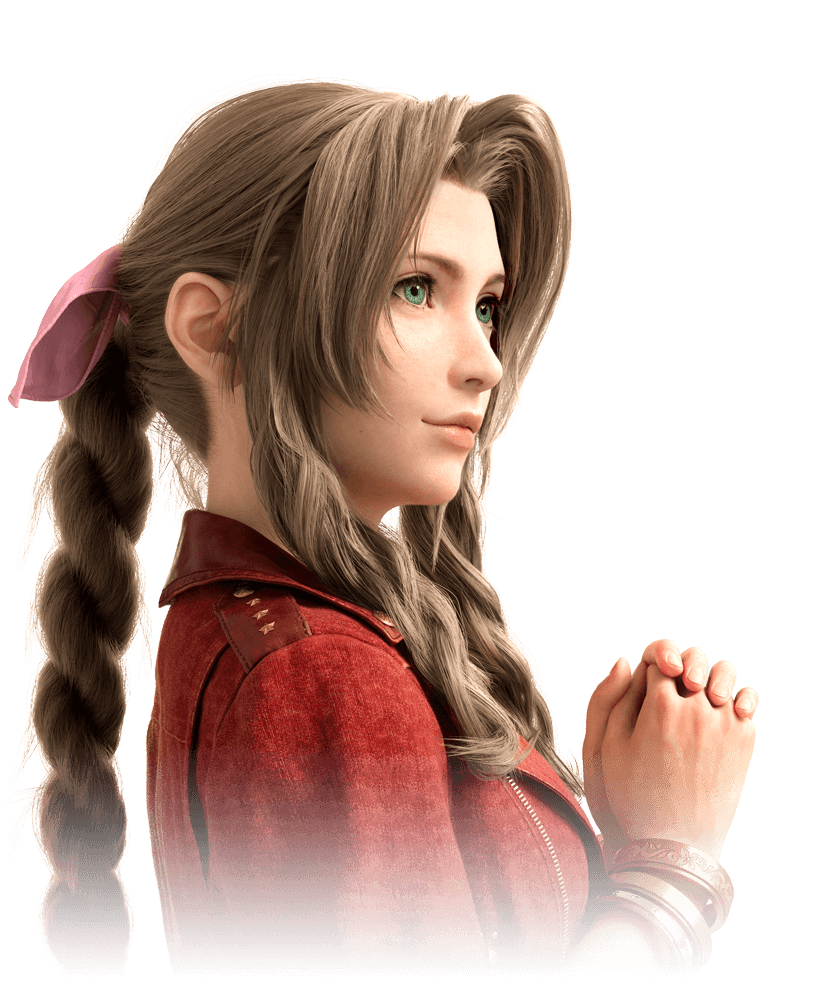

An ex-SOLDIER: first class, Cloud came to Midgar to start a new chapter of his life as a mercenary.
At the invitation of his childhood friend, Tifa, he accepted a job with Avalanche. He may bring his
buster sword to bear against Shinra troopers, but he does not care for plight of the planet.
For him, this is a job and nothing more.


Aerith Gainsborough
Aerith is a flower seller who lives in the Sector 5 slums, who first meets Cloud on the streets of Midgar
after the bombing of Mako Reactor 1. Shinra has kept a close eye on her ever since she was a child,
as she has the ability to hear the voice of the planet. She is often found tending a modest bed of flowers
at an old church in Sector 5.
Tifa Lockhart
A loyal member of Avalanche─an underground organization opposed to Shinra─Tifa also runs Seventh Heaven,
a popular bar in the Sector 7 slums. Although she bears a terrible grudge towards Shinra, she is not convinced
that bombing mako reactors is the solution. As she struggled to reconcile her cause with her conscience,
Tifa was reunited with her childhood friend, Cloud, for the first time in years...
Sephiroth
A former SOLDIER who distinguished himself as a hero in the war against Wutai. His accomplishments on the battlefield are so legendary
that they inspired countless people to join the military. Official reports state that he died while on a classified mission,
though details of the incident are almost nonexistent.